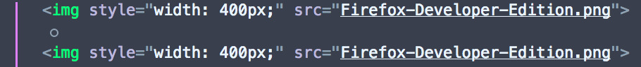

This page demonstrates how the Firefox Developer Tools display whitespace-only text nodes.
The page includes two images, that are specified using markup like this:
<img style="width: 400px;" src="Firefox-Developer-Edition.png"/>
<img style="width: 400px;" src="Firefox-Developer-Edition.png"/>
Because there is a line break between the two <img/> tags, the browser generates a text node, which is seen as a space between the two images.
If you examine the page using the Page Inspector, you'll see the text node in the markup view. It looks like a grey circle:

To learn more about how the Inspector displays whitespace-only text nodes, see the docs on MDN.